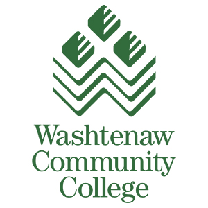

Experience Highlights
Technomics Inc | Senior Associate | Mar 2025 - Present
• Streamline International Sales management processes by developing automated workflows using Power Automate, reducing manual data entry and case tracking time by over 50%.
• Create custom Power Apps to digitize and standardize key sales workflows, improving visibility and accountability across stakeholders.
• Integrate Power Platform tools with internal systems and databases to automate the intake, validation, and routing of request data.
• Supporte financial reconciliation by designing automated alerts and data validation tools to flag discrepancies.
• Document all automations and conducted user training sessions to ensure adoption, sustainability, and knowledge transfer across the team.
• Proactively pursued GAO-compliant cost estimating training to strengthen technical proficiency and contribute more effectively to program analysis and reporting.
• Led capability development and community engagement efforts by establishing a partnership with a local non-profit, leveraging company expertise to deliver mentorship program for local high school students
• Advocated for and secured organizational funding and leadership approval for continued participation in the Great Lakes Data, AI, and Analytics Summit, reinforcing the company’s presence in the regional data and AI ecosystem
Ford Motor Company | Data Engineer - Manufacturing & Quality | May 2024 - Jan 2025
• Provided data stewardship across 15 sources, resolving ETL issues to enhance data accuracy and reliability.
• Led cross-functional meetings, coordinating ETL pipelines migrating data to GCP, accelerating analytics delivery time.
• Developed six data products with Airflow, Python, BigQuery, streamlining aggregation of 500+ tables across ~30 Ford manufacturing plants.
• Optimized Python scripts and implemented Airflow best practices, reducing ETL pipeline development time by 75%.
• Created and centralized documentation to streamline new-hire onboarding for Data Stewards.
• Ranked 3rd in Ford’s Quality Hackathon, leveraging LLM technology to improve manufacturing quality.
• Reduced GCP costs by collaborating with source teams to review cloud resource usage and ensure efficient utilization.
Ford Motor Company | Data Engineer - IT Business Operations | Mar 2023 - May 2024
• Supported development of dashboards to provide insight to business users using Alteryx & QlikSense.
• Led migration from on-premises data storage and ETL processes to Google Cloud Platform (GCP), enhancing scalability, efficiency, and cost savings.
• Documented learnings and processes to minimize the learning curve for new teammates.
• Collaborated with stakeholders across departments to review business issues & deliver actionable insights.
Ford Motor Company | Data Governance Analyst | Apr 2021 - Mar 2023
• Built data ingestion pipelines using Alteryx, SQL, and Python to cleanse and aggregate data from various data sources and built out the team’s performance metrics.
• Assigned as Data Steward for two databases consisting of 300+ tables of data in Hadoop Hive.
• Investigated data discrepancies using various endpoints and UIs to compare with results from API calls.
• Maintained security policies for users, ensuring appropriate access based on data classifications and roles.
• Led team in transition to BMC Remedy ITSM for requests and incident reports submitted to the team.
• Collaborated with teammates to transition the access-provisioning process to GCP.
• Mitigated risk by developing an Alteryx workflow to review user access against required attestations, flagging non-compliant users, and generating an email list for reminders or access revocation.
Army Michigan National Guard | Budget Officer | Oct 2024 - Present
• Support budget execution of a multi-million-dollar budget for recruiting and retention purposes of National Guardsmen across the state of Michigan, ensuring compliance with fiscal policies & regulations.
• Refine current workflows to reduce labor hours used in manually processing data and to streamline reporting using Microsoft PowerAutomate and PowerBI.
• Develop annual financial plans aligned with unit priorities, maximizing resource efficiency and minimizing waste.
Army Michigan National Guard | Accounting/Finance Officer | Jan 2021 - Oct 2024
• Oversee Army pay, commercial vendor support, disbursement of public funds, auditing, travel allowances, accounting, financial management information systems and banking.
• Develop and present financial readiness training across the Brigade consisting of ~1,500 soldiers.
• Nominated as Contracting Officer Representative to manage contracts with commercial vendors.
• Supported the management of a 15 personnel Logistics section to complete required readiness training and perform duties as commanded.
Army Michigan National Guard | Operations Assistant | Jan 2018 - Dec 2020
• Assisted in the facilitation and planning of current and future operations for a 430-Soldier Battalion.
• Was responsible for asset management, including electronic equipment repair and service.
• Composed Operations Orders to extend guidance to subordinate units.
• Developed leadership abilities through mentoring soldiers to uphold Army Doctrine & Regulations.
Army Michigan National Guard | Computer/Detection Systems Repairer | Oct 2014 - Jan 2018
• Was responsible for asset management, including electronic equipment repair and service.
• Maintained various types of equipment in the unit including: electronic, mechanical, and safety.
• Documented status of equipment including changes and deficiencies.
• Mentored new soldiers to assist in on-boarding process.

Coupa Software | Technical Support Specialist | Oct 2020 - Apr 2021
• Assists internal users and external customers with installation, support, and license deployment.
• Provides first tier help desk support in customer installation troubleshooting of product offering.
• Utilize Salesforce.com to manage, track, and issue licenses for new purchases, renewals, partner projects, and training.
Skills
-
Python, HTML/CSS, SQL, R, VBA, PHP
-
Power Platform, Google Cloud Platform, AWS, SAP, Salesforce.com, MySQL
-
MS Excel, QlikSense, Tableau, Alteryx, MS Power BI
-
Financial Analysis, Month-end Closing, Risk Analysis

BBA - Accounting Information Systems
Eastern Michigan University
Aug 2017 - Dec 2020
GPA: 3.42/4.0
Minor: Military Science & Leadership
Extracurricular Activities: ROTC, EMU Mentor Collective

AS - Criminal Justice
Washtenaw Community College
Aug 2012 - Jul 2017
GPA: 3.0/4.0

Volunteerism
-

Aug 2020 - Jun 2021
On-call Firefigher for Milford Township Fire & Rescue.

Aug 2019 - May 2020
Mentored Freshmen at Eastern Michigan University to facilitate a smooth transition from highschool to college.